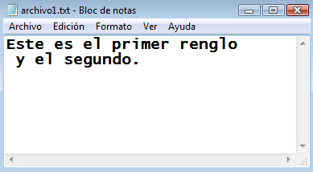
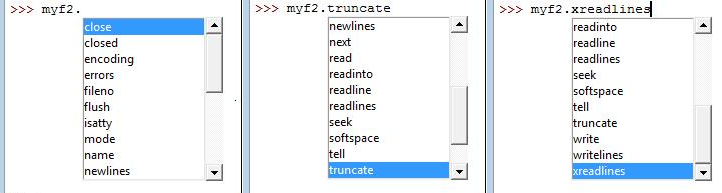
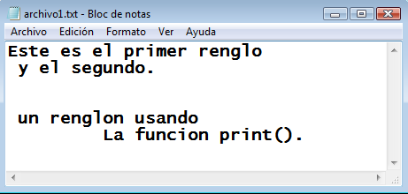

Esta obra esta protegida bajo una licencia de creative commons
Universidad de Antioquia
2010
(Wikibooks, 2011; Docs Python, 2011b; Dev Shed Tutorials, 2011)
Cuando se desarrollan aplicaciones de computador se requiere en muchos casos escribir o leer información que está o se requiere almacenar en alguna otra parte, por ejemplo, en el mismo disco duro, en una memoria USB o en algún sitio de Internet.
Los lenguajes de programación disponen de comandos pare realizar la conexión entre el ambiente del programa y unidades de almacenamiento de información apoyándose en el sistema operativo que se trabaja. Python dispone para esta acción de interactuar con archivos de datos la clase file, la cual es convocada para generar objetos de intercambio de información mediante la función open().
La función open() requiere como mínimo de un argumento, el nombre del archivo y un segundo argumento que define el modo de uso del archivo con uno de los siguientes caracteres:
'r' modo solo de lectura (de la palabra en ingles 'read')
'w' modo solo de escritura (de la palabra en ingles 'write')
'a' modo de adición de datos (de la palabra en ingles 'append')El modo r permite la opción del carácter '+' para acciones simultáneas de lectura y escritura, y el carácter 'b' para intercambiar información en modo binario. Al omitir este argumento se asume que el archivo está en modo de lectura. El modo binario de intercambio de información no lo discutiremos en esta sección, sólo usaremos el modo de información formateado que podremos leer directamente desde un editor de texto cualquiera.
Veamos un ejemplo para crear un archivo y escribir en él una información:
>>>myf1 = open('archivo1.txt','w')
>>>myf1.write('Este es el primer renglo \n y el segundo.')
>>>myf1.close()
Aquí la función open() tiene dos argumento, el primero indica el nombre completo del archivo y el segundo indica que el modo es de escritura 'w'. Se asigna un nuevo objeto tipo file que dispone de un método .write() que escribe los caracteres que están en su argumento directamente en el archivo. Este método se utiliza de forma similar al comando 'print' y se pueden aplicar todos los formatos. El método “.close()” cierra el archivo y lo desconecta del ambiente del programa. Este archivo lo podemos visualizar desde un editor cualquiera, como por ejemplo el bloc de notas que se muestra en la siguiente imagen.

Este archivo ya existente puede volver a conectarlo al ambiente del programa, pero se debe tener cuidado al llamarlo. Veamos este caso:
>>>myf1 = open('archivo1.txt')
>>>type(myf1)
<type 'file'>
>>>myf1
<open file 'archivo1.txt', mode 'r' at 0x02AB54F0>
>>>myf5 = open('archivo5.txt')
Traceback (most recent call last):
File "<pyshell#5>", line 1, in
myf5 = open('archivo5.txt')
IOError: [Errno 2] No such file or directory: 'archivo5.txt'
>>>Observe que se abrió el archivo ya creado de nombre 'archivo1.txt' y en modo de lectura, pues no se escribió explícitamente otro modo. El objeto myf1 creado es de tipo 'file' en modo de lectura como informa el programa al usar la función 'type()'. Al intentar abrir 'archivo5.txt' se obtiene un mensaje de error No such file or directory informando que el archivo no se encuentra.
Para acceder a la información dentro del archivo se utilizan otros métodos disponibles de lectura como el siguiente:
>>>myf2 = open('archivo1.txt', 'r')
>>>myf2.readline()
'Este es el primer renglo \n'
>>>myf2.readline()
' y el segundo.'
>>>myf2.readline()
''
>>>El objeto 'myf2' conecta el mismo archivo en el modo de lectura y podemos leer renglón por renglón usando el método .readline(). Esta información se lee de manera secuencial y puede asignarse a otro objeto o presentarse directamente en pantalla como en este caso.

La anterior imagen muestra todos los métodos disponibles (a la fecha, ya que esto puede evolucionar) en los objetos creados con la función open() (Docs Python, 2011d; Docs Python, 2011e). Veamos algunos ejemplos del su uso y aplicación:
>>>myf2.readline()
'Este es el primer renglo \n'
>>>myf2.readline()
' y el segundo.'
>>>myf2.readline()
''
>>>myf2.readline()
''
>>>El método .readline() hace lectura secuencial de los renglones, en otras palabras, cada que se usa lee un renglón y dispone de un apuntador para tener en memoria donde está leyendo.
>>>myf2.seek(0)
>>>Aquí se utiliza el método .seek() para colocar el apuntador en la posición inicial de nuevo (0). Si no se hace esto, una nueva instrucción de lectura respondería con información vacía.
>>>todo = myf2.read()
>>>todo
'Este es el primer renglo \n y el segundo.'
>>>El método .read() permite leer toda la información del archivo y se asigna a la variable todo de tipo carácter.
>>>myf2.seek(0)
>>>myf2.tell()
0L
>>>myf2.readline()
'Este es el primer renglo \n'
>>>myf2.tell()
27L
>>>myf2.readline()
' y el segundo.'
>>>myf2.tell()
41L
>>>El método .tell() informa la posición del señalador o apuntador de lectura del archivo. Aquí se usa .seek() para colocar el señalador en la posición inicial (0) y luego hacemos lectura secuencial y usamos .tell() para mostrar la posición del señalador en cada lectura de renglón.
>>>myf2.seek(0)
>>>otro = myf2.readlines()
>>>otro
['Este es el primer renglo \n', ' y el segundo.']
>>>El método .readlines() lee todas las líneas como un objeto tipo lista de la información. Aquí la variable otro es de tipo lista ('list') y tienen tantos elementos como renglones en el archivo.
Una forma opcional que se tiene para escribir en un archivo es usando la función print() (para esta versión Python 2.7 no está incluida directamente) la cual dispone de un argumento adicional para asignar donde se escribirá la información formateada. Veamos el ejemplo siguiente:
>>>from __future__ import print_function
>>>myf3 = open('archivo1.txt','a')
>>>s = '\n un renglon usando \n \t La funcionprint(). '
>>>print(s, file = myf3)
>>>myf3.close()
>>>Primero se debe importar explícitamente la función print y después de generar el objeto tipo archivo myf3 se manda a escribir el contenido de la variables indicando dónde con el argumento file = myf3. En la siguiente imagen se visualiza el resultado después de cerrar el archivo desde el programa y visualizarlo con el bloc de notas. Puede usarse cualquier editor de textos.

Para terminar este capítulo, es importante tener presente el sistema operativo en el cual se está trabajando y cómo es la escritura de la posición de los archivos. Si no se define explícitamente esto, el programa direcciona la escritura de archivos a lo que se conoce como directorio de trabajo (working directory). Para conocer esto se debe escribir lo siguiente en el intérprete de Python (Pythonshell):
>>>import os
>>>os.getcwd()
'C:\\Python27'
>>>os.listdir(os.getcwd()) #para mostrar la lista de archivos en directorio de trabajo
['archivo1.txt', ….....
>>>Al importar el módulo os se dispone de algunos métodos para usar el sistema operativo. El método .getcwd() (get current working directory) responde informado cuál es el directorio del momento y es el que usa el programa para definir la ruta o posición de escritura del archivo. El método .listdir(ruta) responde con la lista de archivos del directorio definido por el argumento de la ruta, el cual en el ejemplo es el directorio de trabajo donde está el archivo generado de nombre 'archivo1.txt'
Este directorio de trabajo lo podemos cambiar si deseamos, usando el método .chdir(ruta) (change directory) para seleccionar la ruta de trabajo que deseamos y en la cual se direccionan los archivos que se generen. Veamos el uso de este método:
>>>os.chdir('C:\Python27\ejemplosp27 2011-07-05')
>>>os.getcwd()
'C:\\Python27\\ejemplosp27 2011-07-05'
>>>Al usar este método, todo archivo que se genere se guardará en la dirección 'C:\\Python27\\ejemplosp27 2011-07-05' que se definió como nuevo directorio de trabajo.
Para terminar este capítulo, es importante aclarar que siempre será posible programar una aplicación para interactuar con cualquier elemento de entrada o salida de información, pero será necesario tener en cuenta el sistema operativo y los programas específicos de cada equipo o periférico con el cual se quiere trabajar.
Esta obra esta protegida bajo una licencia de creative commons
Universidad de Antioquia
2010